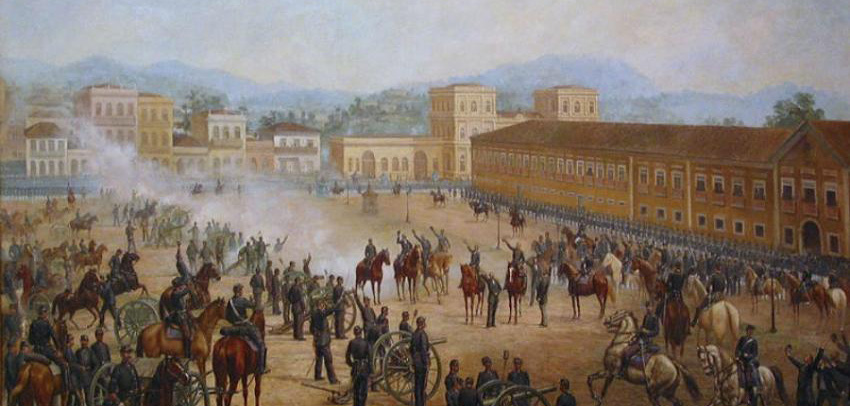

Região Centro-Oeste
A Região Centro-Oeste é uma das cinco regiões do Brasil definidas pelo IBGE em 1969. É formada por três estados: Goiás, Mato Grosso e Mato Grosso do Sul, mais o Distrito Federal, onde se localiza Brasília, a capital do país e a cidade mais populosa da região.
Com uma área de 1 606 403,506 km²[5], o Centro-Oeste é a segunda maior região do Brasil em superfície territorial, superada apenas pela Região Norte, sendo um pouco maior que a área do estado do Amazonas ou da Região Nordeste. Por outro lado, é a região menos populosa e possui a segunda menor densidade populacional. Por esse motivo, apresenta algumas concentrações urbanas e grandes vazios demográficos.
Das regiões brasileiras, o Centro-Oeste é a única que faz limite com todas as demais e, ao mesmo tempo, a mais interiorana do país, sendo a única que não possui litoral.
O Brasil está dividido em cinco regiões. A seguir é possível verificar as regiões do Brasil com seus respectivos estados e as capitais de cada estado.
História
Os indígenas foram os primeiros habitantes da Região Centro-Oeste. Depois chegaram os bandeirantes. Eles descobriram muitas minas de ouro e fundaram as primeiras vilas: Vila Real do Bom Jesus de Cuiabá, atual Cuiabá capital do Estado de Mato Grosso e a cidade mais antiga do oeste brasileiro, Vila Boa, atual estado de Goiás e Meya Ponte, hoje, município de Pirenópolis. Surgiram arraiais que se tornaram municípios importantes. A descoberta de diamante deu origem à vila chamada Corrutela.
Os fazendeiros de Minas Gerais e de São Paulo, também povoaram a região. Eles organizaram grandes fazendas de criação de gado.
Para defender as fronteiras do Brasil com os outros países, foram criados fortes militares. Entre eles, destaca-se o Forte de Coimbra, hoje o município de Corumbá. Em volta desses fortes surgiram povoados.
A construção de Brasília, também contribuiu para o povoamento e o desenvolvimento socioeconômico da Região Centro-Oeste.
O povoamento aumentou com a construção de estradas de ferro e, mais tarde, com o aparecimento das rodovias e das hidrovias.
O Mato Grosso do Sul lutou várias vezes para se tornar independente do Mato Grosso, tendo sua independência oficializada em 1° de Janeiro de 1979.
Turismo
O turismo vem se desenvolvendo rapidamente na região Centro-Oeste do Brasil, atraindo visitantes de várias partes do mundo. A região mais conhecida é o Pantanal, no Mato Grosso e Mato Grosso do Sul. Trata-se da maior planície inundável do mundo e uma das maiores bacias de sedimentação do planeta.
O Distrito Federal é conhecido por abrigar Brasília, a capital do país, um os dez melhores destinos turísticos de arquitetura do mundo,[23] sendo uma cidade que, além de centro político, é um dos principais polos econômicos do país[24]. A cidade recebe grandes eventos, e possui uma das maiores rede hoteleira do Brasil[25]. É a maior cidade do mundo construída no século XX[26], tendo como alguns de seus principais pontos turísticos obras de Oscar Niemeyer. Marco da arquitetura e urbanismo modernos, é detentora da maior área tombada do mundo – 112,25 km² – e foi inscrita pela UNESCO na lista de bens do Patrimônio Mundial da Humanidade em 7 de dezembro de 1987, sendo o único bem contemporâneo a merecer essa distinção[27]. Além de diversas outras regiões.
O estado de Goiás é conhecido por suas belezas naturais. Entre elas, recebem destaque o Parque Nacional da Chapada dos Veadeiros e o Parque Nacional das Emas, que representam a conservação do cerrado. A prática de mergulho é realizada no Lago de Serra da Mesa. As águas termais são encontradas principalmente em Caldas Novas e Rio Quente. Quanto ao aspecto cultural, o patrimônio histórico pode ser encontrado em Pirenópolis, Goiás, Niquelândia e Corumbá de Goiás, que também possuem cachoeiras. Grutas existem praticamente em todas as cidades do Norte Goiano. Destacam-se também a comunidade quilombola de Cavalcante e a comunidade exotérica de Alto Paraíso de Goiás. Em Ivolândia encontra-se a cidade de Pedra. A cidade de Paraúna também conta com formações rochosas. A cidade de Rio Verde possui diversos pontos turísticos. A sua capital é Goiânia, uma cidade que possui em seu centro o maior acervo do estilo patrimonial em art déco no Brasil[29]. Oferece atrativos culturais, além das feiras diárias e da Feira Hippie, aos domingos, a maior do gênero na América Latina. No sudeste goiano, a atração é o Parque Nacional das Emas.
O estado do Mato Grosso tem uma das entradas para o Pantanal na cidade de Poconé e também faz parte da Floresta Amazônica, destacando o Parque Estadual Cristalino. Sua capital é Cuiabá que hoje esta focada no turismo de negócios sendo destino de vários congressos e feiras de devido a sua ótima estrutura hoteleira e de centros de eventos. A cidade de Chapada do Guimarães, distante 65 km da capital, é o principal destino dos turistas que vêm a Mato Grosso. O grande atrativo é a natureza exuberante formada por paredões com formações rochosas, grutas, mirantes e cachoeiras, que juntamente com a flora e a fauna, principalmente os pássaros, atraem muitos turistas brasileiros e estrangeiros. O Parque Nacional de Chapada dos Guimarães reúne todas essas atrações e tem uma boa infraestrutura com quiosques, restaurante, banheiros e guias para receber bem o turista. A cidade de Nobres fica a 120 km de Cuiabá e disponibiliza rios de águas transparentes para a prática da flutuação onde pode-se observar diversas espécies de peixes. Mais ao sul do estado, destacam-se os balneários de águas quentes naturais localizados nas cidades de Juscimeira e Jaciara, onde também está localizada a Cachoeira da Fumaça, complexo de rios e cachoeiras muito procurados para a prática do rafting.
O estado do Mato Grosso do Sul é mundialmente conhecido por sua biodiversidade. Encontrada principalmente no Complexo do Pantanal e no Parque Nacional da Serra da Bodoquena. Sua capital é Campo Grande e suas principais cidades turísticas são Bonito, Jardim e Bodoquena localizados no Parque Nacional da Serra da Bodoquena. Se destacam também as cidades de Corumbá, Aquidauana, Anastácio e Porto Murtinho no Complexo do Pantanal, Ponta Porã e Bela Vista na fronteira com o Paraguai, além das cidades de Rio Verde e Fátima do Sul.
Economia
A Região Centro-Oeste apresenta população urbana relativamente numerosa. No meio rural, entretanto, predominam densidades demográficas muito baixas, o que indica que a pecuária extensiva é a atividade mais importante. A agricultura comercial, por sua vez, vem ganhando grande destaque nos últimos anos e já supera o extrativismo mineral e vegetal. As atividades industriais, entretanto são ainda pouco expressivas. No entanto chama atenção o Distrito Agroindustrial de Anápolis onde se encontra o maior parque industrial do Centro-Oeste do Brasil com destaque para a indústria farmacêutica (Laboratórios Teuto Brasileiro) (com participação de 40% da Pfizer), Neoquímica (da Hypermarcas), Greenpharma, Melcon (com participação de 40% do Laboratório Aché), dentre outras); a montadora de carros coreana Hyundai Motor Company; a Estação Aduaneira do Interior (EADI ou Porto Seco); empresas de fertilizantes (Adubos Araguaia, Fertilizantes Mitsui), etc.
| Estados | PIB | % do PIB nacional | % do PIB regional | PIB per Capita |
|---|---|---|---|---|
| Distrito Federal | 197.432 milhões | 3,4% | 36,40% | 69.216,80 |
| Goiás | 165.015 milhões | 2,9% | 30,41% | 25.296,60 |
| Mato Grosso | 101.235 milhões | 1,8% | 18,65% | 31.396,81 |
| Mato Grosso do Sul | 78.950 milhões | 1,4% | 14,54%/td> | 30.137,58 | Região Centro-Oeste | 542.632 milhões | 9,38% | 100% | 35.653,48 |
Fonte: Wikipedia, 2019.